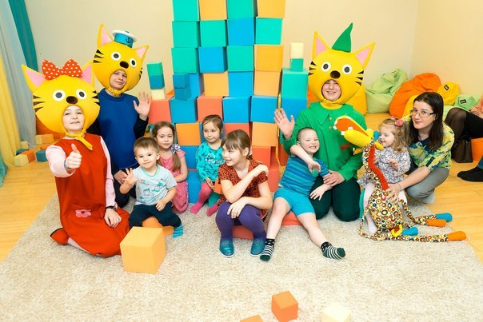
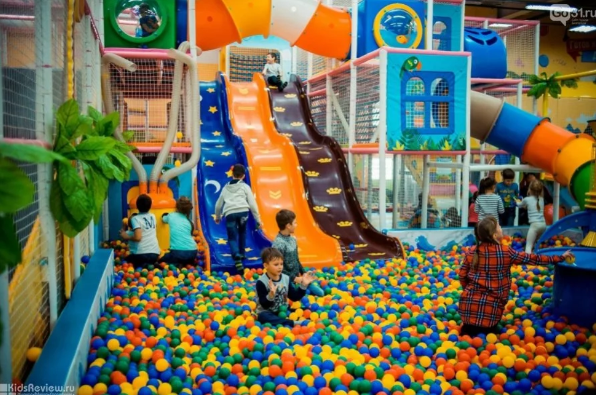
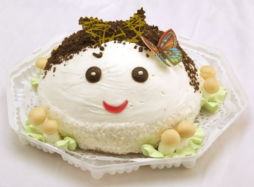
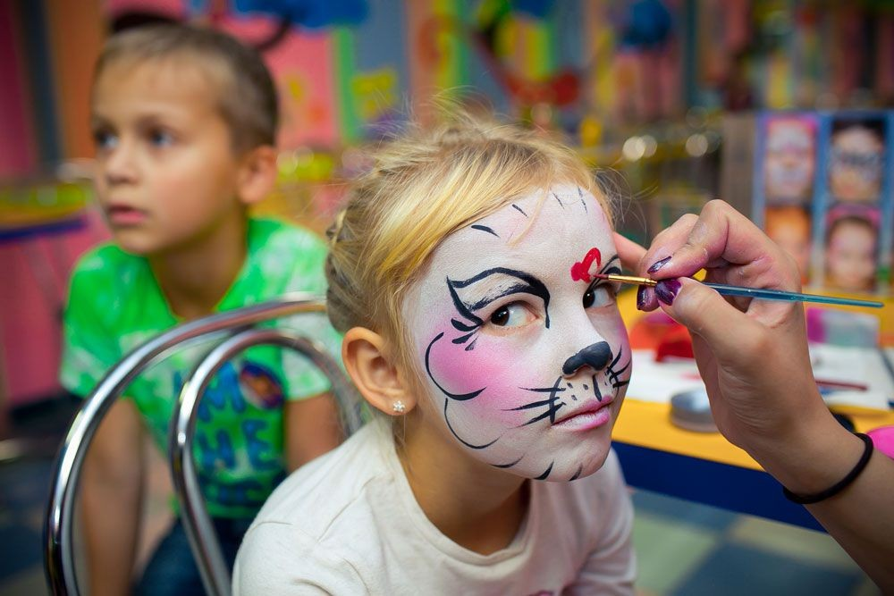
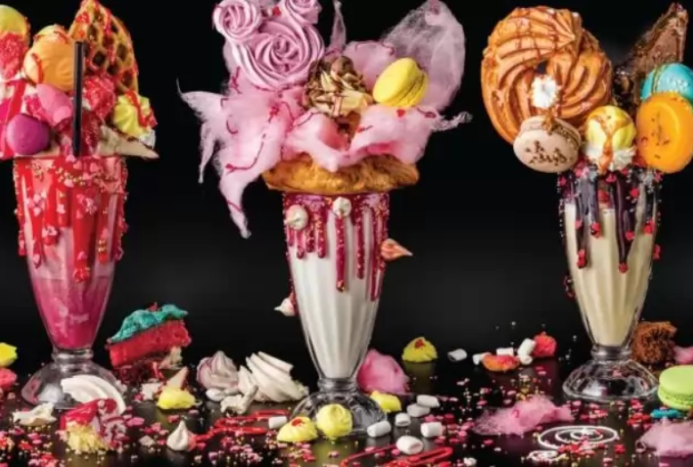
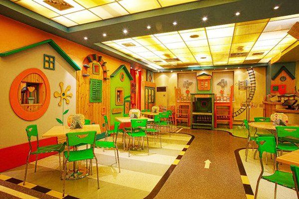

Развлекательный центр «Непоседа»
8 499 433-95-51585
С 10:00 до 22:00. Без выходных!
Развлекательный центр «Непоседа»
8 499 433-95-51585
С 10:00 до 22:00. Без выходных!
Современные аттракционы, профессиональные актеры и вкуснейшая детская кухня радуют наших гостей. В детском клубе столько развлечений, что целого дня едва хватит все попробовать! Лабиринты, горки с тюбингами, сухие бассейны, вулканы, веревочный парк, ниндзя-арена — и всё это в одном билете.
С детьми всегда находится аниматор. У нас работают будущие актеры, психологи и педагоги. Они чувствуют детей и знают, что они любят. Аниматоры проводят подвижные игры, где дети взаимодействуют друг с другом и придумывают выход из сложных ситуаций.
Оформить билетРазвлечения
15 увлекательных детских аттракционов и команда аниматоров подарят малышу интересный отдых.
Безопасность в парке

электронная система выхода из игровой зоны аниматоры-дежурные бесплатно следят за детьми безопасное немецкое оборудование
Популярные аттракционы

лабиринт протяженностью 200 метров тюбинговая горка двухэтажный веревочный парк для детей
Семейное кафе на территории

бесплатный WI-FI более 30 посадочных мест полезная детская домашняя кухня
День рождения
Детский День Рождения в развлекательном центре от 9 450 руб.
Активная и развлекательная программа + праздничный стол!
Почему праздник для Вашего малыша будет по-настоящему сказочный
Все блюда которыми мы будем баловать детей будут приготовлены профессиональным детским шеф-поваром.
Аниматоры которые будут создавать шоу для малыша являются выпускниками ведущих актерский школ и институтов страны.
Вы сможете выбрать любой из 2-х больших спортивных комплексов под активные игры.



Кафе
Уютное семейное кафе с домашней кухней, двумя детскими игровыми зонами и анимацией!
Более 60 блюд домашней кухни, 15 увлекательных детских аттракционов, и группа
профессиональных аниматоров подарят Вам и Вашему малышу незабываемые часы
счастья!

Почему Вам и Вашим детям понравится у нас в кафе